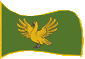
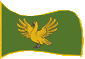

| Übersicht,
Anschläge und Stammtisch (RPG) |
|
Die Turnier-Ergebnisse
|
Rian Almaren
  |
Tilokh, vermutlich wird der Markgraf dem zustimmen, denn auch mir bot er dies an. Ich war zwar angemeldet konnte aber auf Grund einiger Hindernisse in meinem Weg leider nicht puenktlich anreisen. Vielleicht liesse sich fuer uns 3 ja ein kleines privates Turnier einrichten ...
((OOC: Selbe Entschuldigung wie Tilokh: Wenn die Wahl zwischen einem SW-Turnier und einem langen Wochenende in Cape-Town fallen muss ist die Entscheidung wohl eindeutig. Da auch der Dienstag noch ein offizieller Turniertag war, waehre an sich eine Austragung sicher moeglich gewesen ... ))
Rian Almaren
Zur 20. Stunde am 58.Saatmond im Jahre 417 |
18.08.04 17:55
 |
|
| Ithildor Calanór (RIP) |
Werter Tilokh Araxes,
ich sehe es eigentlich wie ihr und wüßte nicht, warum eine Abmeldung aus zeitlichen Gründen eure Ehre verletzen sollte. Aber wenn ihr darauf besteht, euch mit mir zu messen, so werde ich eure Forderung selbstverständlich annehmen.
Markgraf Ithildor,
Vorsteher von Tal en Tawar,
Anführer der glorreichen Nation "Volk der Dûr´Hith"
Zur 20. Stunde am 58.Saatmond im Jahre 417 |
18.08.04 17:59
|
|
| Darken Rahl (RIP) |
Markgraf Tilokh Araxes,
ja ich gestehe, ich habe versagt... wegen genau 3 abgetrennten Fingern mehr. Doch sorgt euch nicht, sie konnten von kundigen Heilern wieder angenäht werden.
*flucht noch immer vor sich hin*
Darken Rahl,
Priester im Dienste des einzig wahren Glaubens an Urvan
Zur 23. Stunde am 58.Saatmond im Jahre 417 |
18.08.04 18:29
|
|
Sionnach Arolis Amaorla
   |
Von Urvan wurden wir alle geprüft in ehrenhaften Duellen.
Als Siegerin der Disziplin Feuer wurde mir eine große Ehre zuteil.
*verneigt sich leicht vor dem Altar Urvans in der Arena*
Ich wurde mit dem Sternenlicht beschenkt.
So ist es Urvans Wille und Urvans Wunsch.
*erhebt sich lächelnd in einer Robe, die wie der Nachthimmel schimmert*
Lady Sionnach Arolis,
Vorsteherin von Isthmûriel dûr Mâre
Zur 11. Stunde am 63.Saatmond im Jahre 417 |
19.08.04 19:53
|
|
| Nemo van Delving (RIP) |
Auch ich gratuliere allen Siegern und natürlich auch denen die mitgemacht haben, den Veranstaltern und allen Beteiligten für dieses grandiose Turnier!
CaptNemo,
Vorsteher von Bethana,
Priester im Dienste des einzig wahren Glaubens an Urvan
Zur 12. Stunde am 63.Saatmond im Jahre 417 |
19.08.04 19:57
|
|
| Gerbier (RIP) |
Auch wenn diesmal kein Vertreter des Ratsreichs Magesh vertreten war, so möchte ich doch im Namen meiner Nation allen Siegern recht herzlich gratulieren.
Vielleicht finde ich ja bei einer Neuauflage des Turniers die nötige Zeit, um teilnehmen zu können. Einzig der Glaube daran fehlt mir, wenn ich die Papierstapel auf meinem Tische sehe. Aber egal, ...
Nochmals herzlichen Glückwunsch an alle Sieger! Und meine Hochachtung vor allen Teilnehmern!
Baron Gerbier,
Anführer der glorreichen Nation "Ratsreich Magesh"
Zur 5. Stunde am 66.Saatmond im Jahre 417 |
20.08.04 11:04
|
|
Übersicht,
Anschläge und Stammtisch (RPG)
|